先把问题讲清楚，再搭出第一版
- AI Agent 相关介绍和好用经验
- 个人工作台案例拆解
- 明确需求，共写 PRD
- 搭建一个 Demo
输入访问密码后继续。
给时间开一个复利外挂
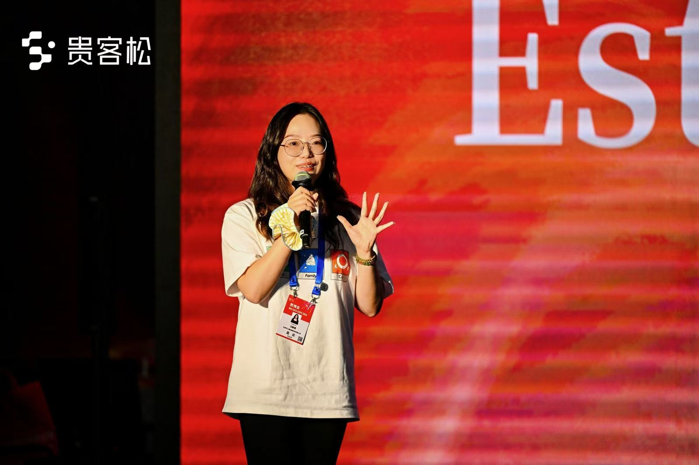
上海人工智能创新创业导师
上海妇联 AIGC 培训导师
全网 5w+ 粉 AI 教程内容创作者
GitHub 设计 Skill 仓库 500 Star
shenicest 女性黑客松 / 贵客松等黑客松评委
南京大学 / 米兰理工大学建筑本硕
前数字生命卡兹克 / 虚实传媒运营主管
现 Cola AI Agent 增长运营
真正有价值的不是某一次漂亮输出，而是每次使用都给下一次留下材料。
信息散落在备忘录、收藏夹和脑子里，会不断中断。系统就是那条让积累持续发生的山坡。
— Warren BuffettAgent 把这类杠杆带到个人身边，让一个人也能搭出贴合自己的工具。
— Naval Ravikant一次性的 AI 输出会结束；工作台会被重复使用，并在使用中变得更懂你。
— James Clear不要从“AI 能做什么”出发，先从“哪件事总让我重新开始”出发。
真正的关键不是“做出一次”，而是让每一次使用都给下一次留下可复用的东西。
场景不同，复利的核心相同：把今天的结果，变成下一次的起点。
读书笔记 · 学习笔记 · 素材打标签 · 图片收集 · 剪贴板管理
写作助手 · 表达训练 · 英语口语 · 复盘系统
健身计划与记录 · 项目拆解 · 情绪追踪 · 心理疗愈
不用把功能、流程和页面都想完整。先想清楚一个主题，就够了。
我今天想做的工作台，
是什么主题？
想好以后，欢迎用一句话跟大家分享：你想做一个什么主题的工作台？
我们看到的是产品界面；真正生成回答的，是背后的模型。会生成一个合理答案，不等于掌握了真实答案。
聊天、搜索、文件和记忆，被包装在一个可以直接使用的产品里。
Token 不是“词源”，可能是字、词的一部分、完整单词或标点。
它在生成最可能成立的表达，而不是从训练资料里检索一段原文。
答案听起来合理、甚至非常自信，但事实没有可靠依据，或者根本不正确。
LLM 负责理解与判断；MCP 接入外部世界；Skill 固化做事方法；Context 提供眼前材料；Memory 让下一次不必重新开始。
Agent 的价值不只取决于模型有多聪明，还取决于它能接触什么、遵循什么方法，以及能否延续过去的积累。
一个负责连接外部能力，一个负责固化做事方法。
一种通用连接协议，让不同 Agent 可以用相似的方式接入文件、数据库、日历和其他外部服务。
给 Agent 能力入口一套可复用的 SOP，保存步骤、标准、模板，以及完成任务时需要遵守的方法。
给 Agent 执行方法一个提供这一轮可见的背景信息，一个保存可以跨任务延续的记忆。
当前任务的上下文背景信息：对话、目标、文件、资料和刚刚产生的结果。容量有限，也会随着任务变化。
上下文背景信息保存在当前对话之外的偏好、决定和历史状态，需要时再被取回，继续服务新的任务。
记忆 · 取回后放进 Context 才能使用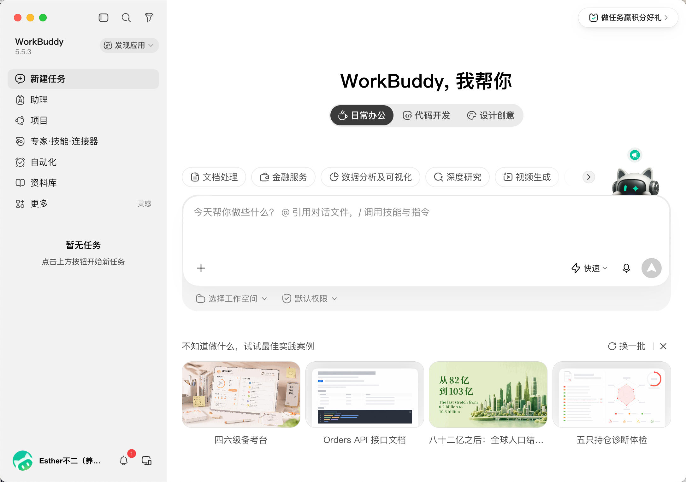
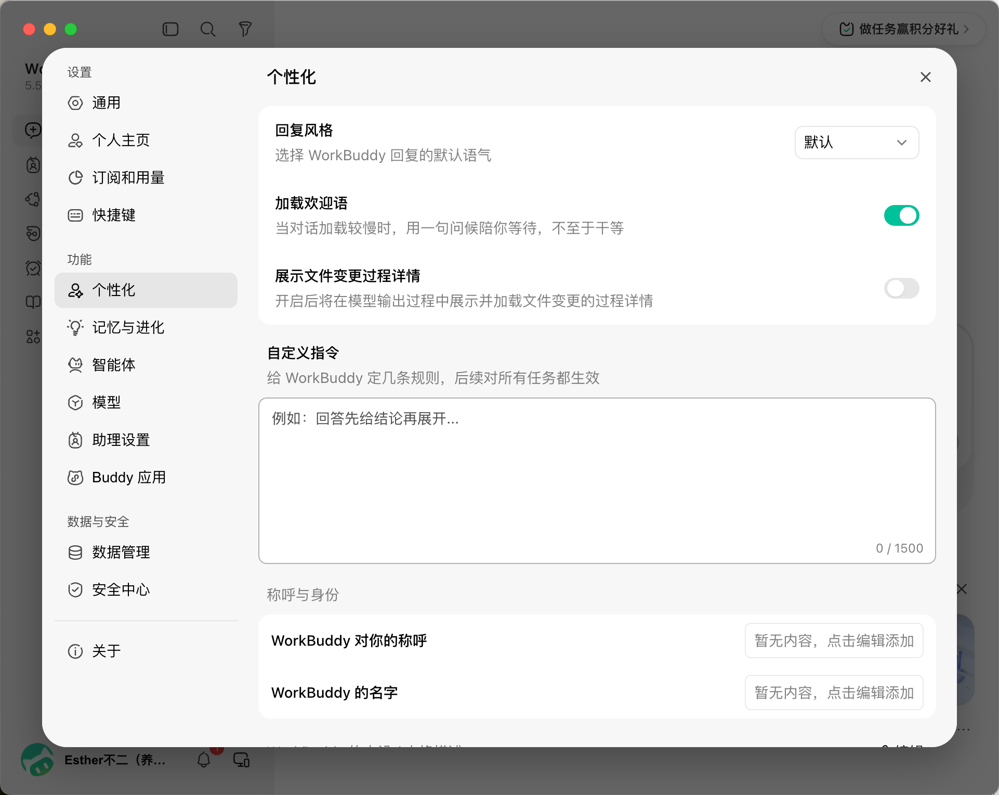
减少常见 LLM 编码错误的行为准则。可根据需要与项目特定指令合并。
权衡：这些准则倾向于谨慎而非速度。对于简单任务，自行判断即可。
不要假设。不要隐藏困惑。把权衡摆到台面上。
在动手实现之前：
用最少的代码解决问题。不写投机性代码。
问自己一句：“一个资深工程师会说这写复杂了吗？”如果是，简化。
只动必须动的地方。只清理自己制造的问题。
编辑已有代码时：
当你的修改产生了孤立代码时：
检验标准：每一行改动都应该能直接追溯到用户的需求。
定义成功标准。循环验证直到确认通过。
把任务转化为可验证的目标：
对于多步骤任务，列出简要计划：
强成功标准让你能独立循环推进。弱标准（“让它能跑”）则需要不断澄清。
这些准则起作用的标志是：diff 中不必要的改动更少了，因过度复杂化而返工更少了，澄清性问题出现在实现之前而不是犯错之后。
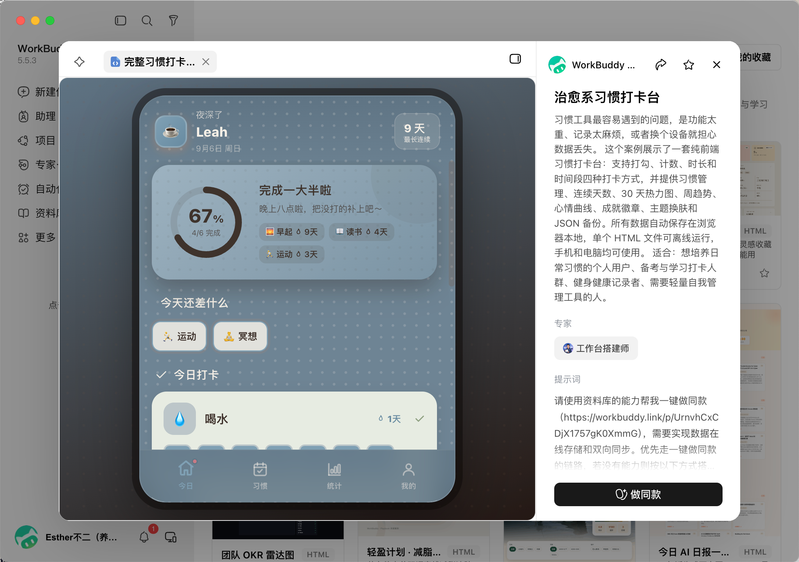
复制口令，用电脑端或小程序打开 WorkBuddy，即可一键复刻「治愈系习惯打卡台」。
少返工、少重读
比抠小数点更管用。
比 Word、PDF 更容易被 Agent 直接读取。
下一轮直接读，不必重新翻完整段对话。
返工往往比第一次多说明两句更费 Token。
把高能力模型留给复杂推理和关键修改。
只打开当前任务真正需要调用的能力。
只有真的需要判断视觉时，再传图片。
课程结束一周后，我们会从大家完成的工作台里进行评选。做得比较完整、比较出色，或者有自己亮点的作品，都有机会被选中。
选出 3 位朋友送出 Vibe Coding 键盘麦
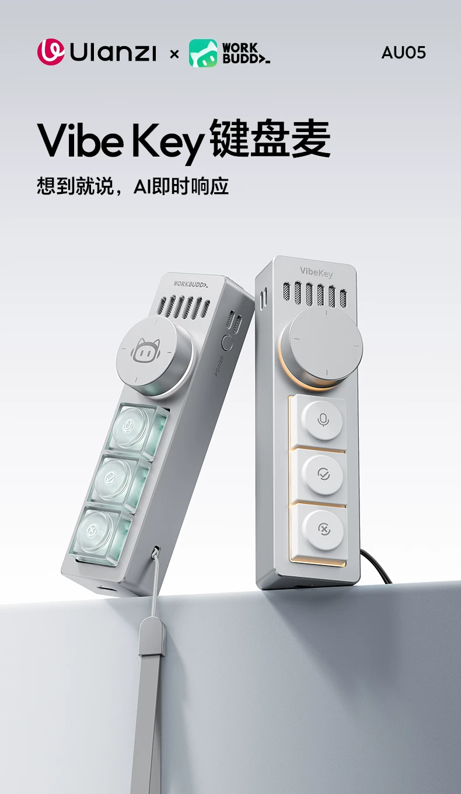
把模糊想法变成一份可以执行的产品说明。
在互联网团队里，产品经理把用户问题翻译成可执行的产品方案。
PRD 让所有人对“做什么、怎么做”达成共识。
要为谁解决什么真实问题？
第一版有哪些核心功能，哪些暂时不做？
用户从输入到得到结果，要经过哪些关键步骤？
什么结果可以被检查、被验收？
今天不需要变成产品经理，只需要先把想法讲清楚，Agent 才能把它做对。
有方向时，用第一性原理找到真正的问题；有方案后，用魔鬼代言人主动攻击自己的假设。
回到事实、目标与约束，把“大家都这样做”和“我以为需要”一层层拿掉，留下真正要解决的问题。
让 AI 强制站在反方，专门寻找隐含假设、逻辑漏洞与失败风险，直到没有新的质疑点。
第一性原理把问题拆到根上；魔鬼代言人把方案打到站得住。
没有先列功能，也没有先写技术方案。只把真实经历和卡点讲清楚，请 AI 用产品经理的方式继续追问。
我有一个痛点：我很喜欢看各种各样的书，每次看完都觉得学到了很多，好像有很多新的知识点进入了我的脑子。但是当我真的需要调用这些知识时，我往往想不起具体的观点，也不知道应该从哪本书、哪个知识点开始找。
请你扮演一位有经验的产品经理，通过访谈帮我把这个需求逐渐问清楚。先不要急着给我解决方案，也不要写 PRD。
# 不二的书架 PRD
## 1. 产品背景
- 我喜欢阅读各种书籍，每次读完都获得很多知识。
- 但在真正需要使用时，往往想不起具体观点，也不知道去哪里找。
## 2. 产品目标
把读过的书和核心观点整理成可浏览、可关联的个人知识网络，
帮助用户更快找回并重新使用过去学到的知识。
## 3. 目标用户
- 想整理阅读积累、快速找回书中观点的人
## 4. 核心功能
- **书架浏览**：展示书名、作者、分类、标签，支持筛选
- **书籍详情**：展示全书高光、章节观点、案例和关键词
- **观点网络**：点击关键词，查看关联观点及来源书籍
## 5. 核心流程
进入书架 → 选择分类 → 打开书籍 → 阅读核心观点 → 通过关键词发现关联书籍
## 6. MVP 范围
- 完成书架、分类筛选、书籍详情、观点网络和响应式适配
## 7. 验收标准
- 用户能独立完成浏览、筛选、查看详情和继续探索
- 分类筛选准确，关键词关系可点击，电脑与手机都能正常使用最小可行产品：用最少的功能，验证这个东西是不是真的有用。
先解决最常发生、最值得被重复解决的问题。
先跑通最短闭环，让这次使用能给下一次留下东西。
用户能不能独立完成核心流程，并得到可以检查的结果？
先验证“有没有用”，再决定要不要加登录、协作、支付和更多页面。
Demo 是一个可以打开、可以操作、可以验证核心流程的第一版。
不要求完整，但必须真的能用。
把刚刚确认的需求文档放进工作空间，让它先读懂目标和范围。
先说明要创建哪些文件、每部分负责什么，以及完成后怎样验证。
在浏览器打开本地页面，跑通“一次输入 → 一个结果”的核心流程。
大家最近常看到用 HTML 做展示页、做 PPT。它其实不是神秘的编程魔法，而是一种用标签描述页面里有什么的标记语言。
<h1>标签告诉浏览器：这段文字在页面里是什么。
<p>内容和结构先由 HTML 描述，样式再交给 CSS。
<img>浏览器读取标签和属性，把代码渲染成看得见的页面。
HTML 补上的，恰好是传统 PPT 在一致性、复用和迭代上的痛点。
HTML 做的不是“一页页”，而是一套可以持续迭代的展示系统。 改一个配色变量，整套一起变化；下次再做，直接复用骨架。
HTML、CSS、JavaScript 各自负责一件事；项目里通常把它们拆成三个文件，方便持续修改。
用标签写出标题、文字、图片、按钮。
负责颜色、字号、布局、间距与响应式。
处理点击、计算、数据读写与动态更新。
三层写在一个文件里也能运行；项目变大后再拆开，更方便维护。
<main class="workspace">
<header>
<p class="eyebrow">READING WORKBENCH</p>
<h1>今天读到了什么？</h1>
</header>
<form id="note-form">
<label for="note-input">新的读书观点</label>
<div class="input-row">
<input id="note-input" placeholder="例如：系统比目标更重要">
<button type="submit">保存观点</button>
</div>
<p id="feedback" role="status"></p>
</form>
<ul id="note-list"></ul>
</main>:root {
--blue: #2b7fd8;
--yellow: #f4d758;
--cream: #fefcf6;
--ink: #1a1a2e;
}
.workspace {
width: min(720px, 100%);
margin: 0 auto;
}
.input-row {
display: flex;
gap: 12px;
}
button:focus-visible {
outline: 3px solid var(--yellow);
}const form = document.querySelector("#note-form");
const input = document.querySelector("#note-input");
const list = document.querySelector("#note-list");
const notes = JSON.parse(localStorage.getItem("notes") || "[]");
function renderNotes() {
const items = notes.map(note => {
const item = document.createElement("li");
item.textContent = note.text;
return item;
});
list.replaceChildren(...items);
}
form.addEventListener("submit", (event) => {
event.preventDefault();
const text = input.value.trim();
if (!text) return;
notes.unshift({ id: Date.now(), text });
localStorage.setItem("notes", JSON.stringify(notes));
renderNotes();
form.reset();
});
renderNotes();READING WORKBENCH
试着输入一条观点。JavaScript 会把它保存下来，并立刻更新右边的列表。
还没有记录，先留下第一条吧。
HTML、CSS、JS 是原材料；
React、Vue 是把原材料组织起来的一套搭建方式。
展示页或单页工作台
功能与交互比较简单
想先验证想法有没有用
时间有限，先做出 Demo
页面和重复组件越来越多
数据状态与交互很复杂
需要登录、路由或权限
需要多人长期协作维护
不用先替 Agent 决定所有技术细节。把目标和判断标准交给它，让它根据复杂度选择合适的实现方式。
你是一位有经验的前端工程师。请根据刚才这份 PRD，帮我把它做成一个可以长期维护的项目。请结合项目复杂度判断使用原生 HTML、CSS、JavaScript，还是 React、Vue 等框架，并说明理由。先给我项目结构、实现计划和验收方法，等我确认后再开始实现。
AI 默认给出的是常见答案。你要做的，是用参考和规则，把“平均值”一步步拉向自己的判断。
AI 的第一版，通常是大家都见过的样子；
你的选择，才会让它变成你的设计。
把“我喜欢”变成可以描述、可以执行的设计规则。
把成熟的设计经验，变成 Agent 可以反复调用的方法。
你的角色不是手写每个像素，而是做出设计判断。
先把喜欢的图全部上传，再明确先做什么、后做什么。
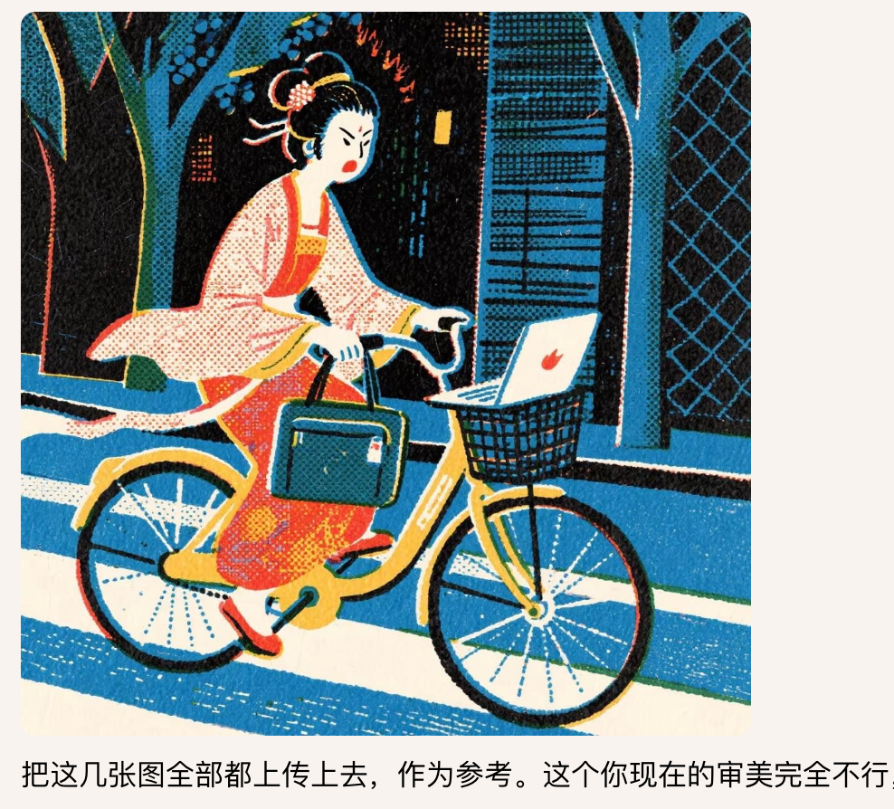
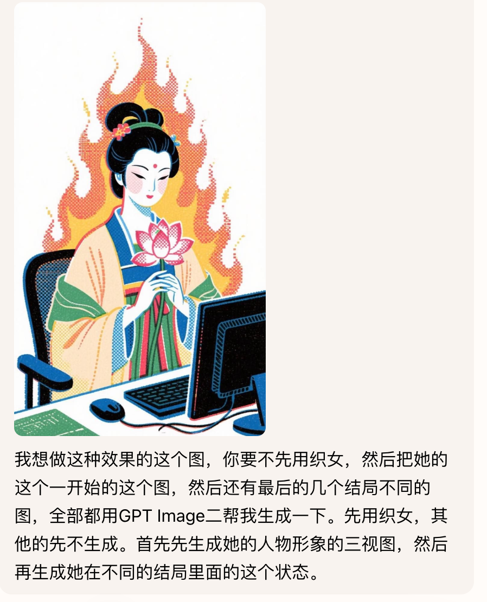
点击名称直接打开网站。
把成熟的设计经验装进 Agent，后续就可以反复调用。
打开 Skill 仓库，复制浏览器地址栏里的完整链接。
不需要自己下载文件，也不需要手动配置目录。
直接说：帮我安装这个 Skill：[粘贴 GitHub 链接]
先有自己的问题和第一版，再去看成熟项目。我们借的是解决问题的思路，不是把别人的产品搬回来。
页面功能如何拆分
文件和代码如何组织
异常情况和边界如何处理
哪些组件可以反复复用
不直接复制品牌、文案和图片
不确认许可证，不投入商用
不因为 Star 多，就默认适合自己
不复刻全部，只借一个有用思路
让 Agent 帮你找相似仓库、读说明和目录，最后只带走一个真正适合你的思路。
名字很像，但不是同一个东西：一个在本地记录版本，一个在网上存放和分享项目。
记录项目每次修改，让你知道改了什么，也能回到之前的版本。
记录改动
Commit 保存稳定版本
改坏以后可以回退
用来存放、分享和寻找项目，也是全球最大的开源社区之一。
把仓库放到网上
寻找和阅读开源项目
与团队或 Agent 协作
连接的目的，是让 Agent 帮你搜索、阅读和分析项目，而不是直接修改别人的仓库。
注册 GitHub ↗；访问不便时也可以使用 Gitee ↗。
在 Agent 的连接器里完成 GitHub 授权，让它能够搜索和读取仓库。
本环节只搜索、阅读和分析，不提交代码，也不修改外部仓库。
帮我找与项目相关的开源仓库，读说明和目录结构，告诉我最值得借鉴的一个思路以及怎样用到我的项目里。只读取，不提交代码。
先在本地真正用起来，再考虑部署。真实使用，才会暴露真正的卡点。
拿真实或脱敏数据，从输入一直走到结果与保存。
安全与数据 → 功能错误 → 使用阻力 → 文案与视觉。
不要顺手重构，也不要同时塞进一串新需求。
确认问题消失、原功能没坏，并留下验证方法。
先不要修改代码。用真实输入检查核心流程，只报告问题，并按严重程度排序。
只修最严重的一个问题。说明改了哪里、为什么、怎么验证；不要顺便改别处。
不要凭想象继续加功能。把真实使用时的沟通、约束和决定留下来，下一次调优才有依据。
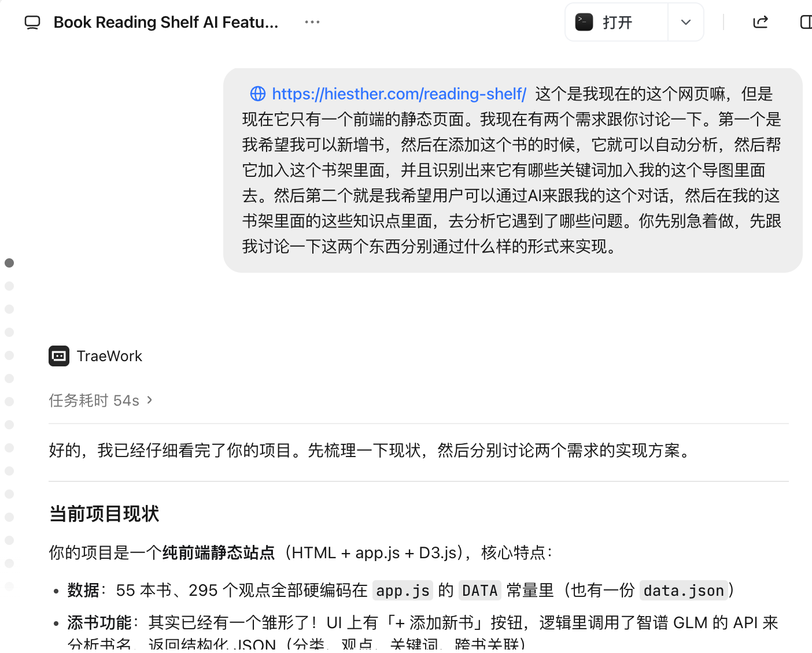
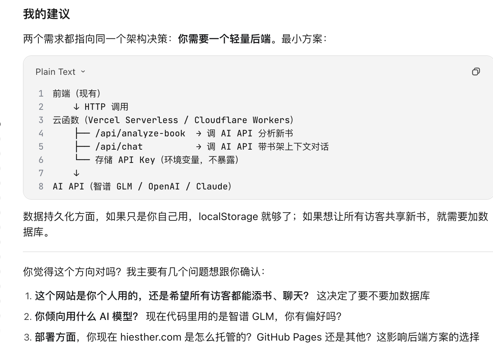
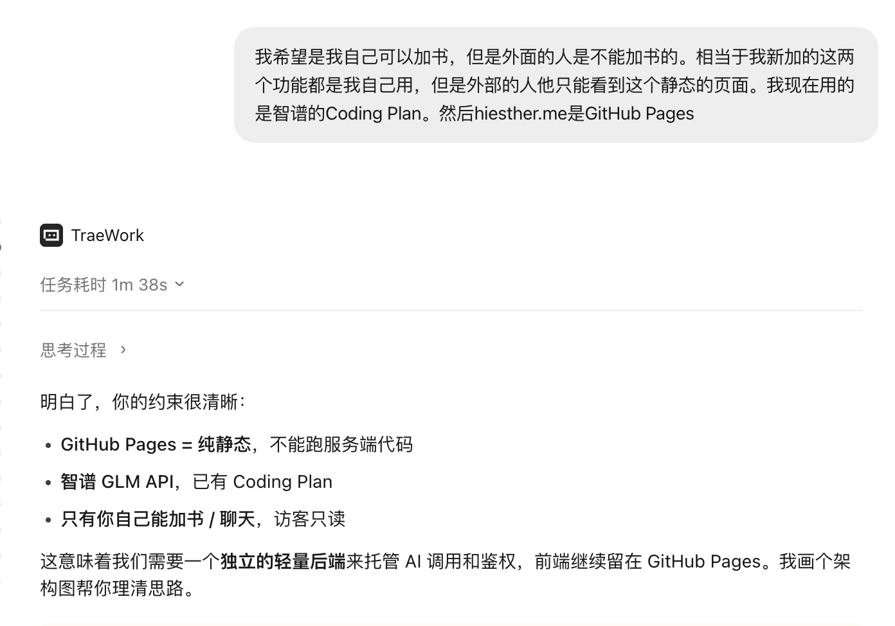
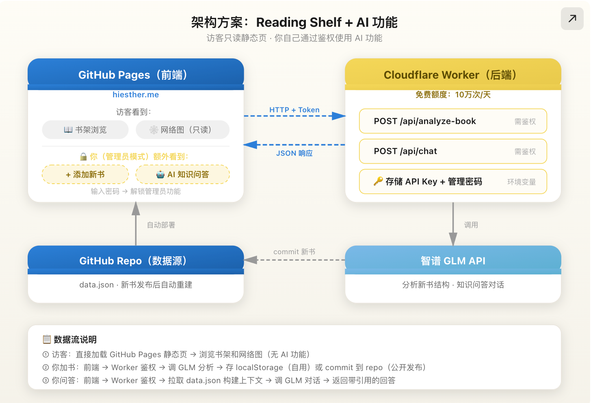
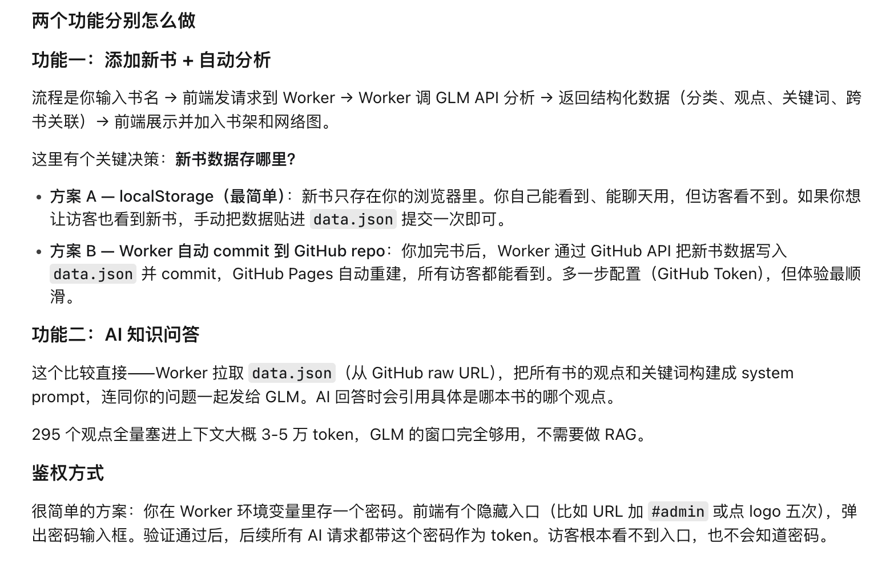
比如自动总结一本书、生成关联观点，或者根据已有笔记继续提问。API Key 就是工作台调用模型服务的凭证。
告诉 Agent：什么动作需要 AI、输入是什么、希望得到什么结果。
注册开放平台、创建 API Key，并查看价格与额度。不会选时，让 Agent 根据功能和预算比较。
它负责创建后端或云函数、配置环境变量、调用模型接口，并补上超时与错误提示。
真实 Key 由你自己填入环境变量；测试一次真实任务，并检查费用是否可控。
我想给当前工作台增加 AI 能力：[它要完成的任务]。我准备使用 [模型平台] 的 API。请先检查项目，告诉我需要创建什么、Key 应放在哪里、费用和安全风险是什么；等我确认后再实现。真实 Key 不要写进前端或 Git，完成后给我测试方法。
书单要支持直接加书、换设备继续使用，甚至开放给别人，就不能只把数据放在当前浏览器里。
要保存什么？是否需要登录？是否跨设备？会不会有多个用户？
设计字段、创建登录、写入读写接口，并设置每个用户的数据权限。
新增一条数据 → 刷新还在 → 换设备登录还能看到 → 别人看不到。
我希望这个工作台的数据可以长期保存：[说明数据和使用者]。请先比较数据库方案，输出数据结构、登录方式、权限规则和费用风险；等我确认后再接入，并完成跨设备测试。
服务器或托管平台让项目在你的电脑关机后仍然在线。个人项目可以直接用 CloudBase 这类托管服务，不用先学会维护一台服务器。
域名就是网站的门牌号，例如 hiesther.com。做 Demo 时先用平台测试地址；正式公开时再购买和绑定自己的域名。
你不需要先学会所有命令。先让 Agent 判断项目属于哪种类型，再让它带着你完成部署。
请帮我部署当前项目。先判断它是纯静态网页，还是需要后端、AI 或数据库；根据国内访问、预算和域名情况推荐平台。先解释方案和费用，等我确认后再操作。
想法 + 你的判断 + Agent 的执行
= 每天都能使用的复利系统